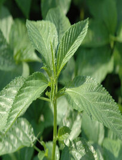

| ছবি | ফসলের তালিকা | বর্ণনা |
|---|---|---|
| ধান | ধান (বৈজ্ঞানিক নাম Oryza sativa, Oryza glaberrima ) Graminae/Poaceae গোত্রের দানাশস্যের উদ্ভিদ। ধান উষ্ণ জলবায়ুতে, বিশেষত পূর্ব-এশিয়ায় ব্যাপক চাষ হয়। প্রাচীন চীনা ভাষার Ou-liz শব্দটি আরবিতে Oruz ও গ্রিক ভাষায় Oryza হয়ে শেষে Ritz ও Rice হয়েছে। ধান বা ধান্য শব্দের উৎপত্তি অজ্ঞাত। ধানবীজ বা চাল সুপ্রাচীনকাল থেকে লক্ষ লক্ষ মানুষের প্রধান খাদ্য। চীন ও জাপানের রাজাদের পৃষ্ঠপোষকতায় প্রায় ১০,০০০ বছর আগে ধান চাষ শুরু হয়েছিল বলে জানা যায়। ব্যাপক অভিযোজন ক্ষমতার দরুন ধান উত্তর কোরিয়া থেকে দক্ষিণ অস্ট্রেলিয়া, এমনকি সমুদ্রপৃষ্ঠ থেকে ২,৬০০ মিটার উচ্চতায়ও (জুমলা, নেপাল) জন্মায়। বাংলাদেশে আউশ, আমন এবং বোরো এই তিন মৌসুমে ধান চাষ করা হয়। ধান সাধারণত একবর্ষজীবি উদ্ভিদ, কোন কোন অঞ্চলে বিশেষ করে নাতিশীতোষ্ণ অঞ্চলে ধান দ্বি-বর্ষজীবি উদ্ভিদ হিসেবে চাষ করা হয়। ধানকে ৩০ বছর পর্যন্ত চাষ করা যায়। ধানের বৃদ্ধি ও উৎপাদন অনেকসময় মাটির উর্বরতার উপর নির্ভর করে থাকে। ধান গাছ সাধারণত ১-১.৮ মিটার (৩.৩- ৫.৯ ফুট) পর্যন্ত লম্বা হয়ে থাকে। এর পাতা সরু, লম্বা আকৃতির হয়। পাতা ৫০-১০০ সে.মি. (২০-৩৯ ইঞ্চি) পর্যন্ত লম্বা ও ২-২.৫ সে.মি. (০.৭৯ -০.৯৮ ইঞ্চি) প্রশস্ত হয়ে থাকে। সাধারণত বায়ুর সাহায্যে এর পরাগায়ন হয়ে থাকে। | |
| গম | গম (ইংরেজি: Wheat) বিশ্বব্যাপী উৎপাদিত একটি ঘাস জাতীয় উদ্ভিদ যার আদি উৎপত্তি মধ্যপ্রাচ্যের লেভান্ট অঞ্চলে, কিন্তু এখন গম সারাবিশ্বে চাষ করা হয়। ২০০৭ সনে গমের বিশ্ব উৎপাদন ছিল ৬০৭ মিলিয়ন টন, যা ছিল বিশ্বের ৩য় সর্বাধিক উৎপাদিত শস্য। ১ম ও ২য় অবস্থানে ছিল যথাক্রমে ধান ও ভুট্টা। বিশ্বব্যাপী গম এখন প্রোটিনের নিরামিষ উৎস হিসেবে জন্যে অত্যন্ত গুরুতপূর্ণ যা মানুষের খাদ্যে থাকা অত্যন্ত গুরুত্বপূর্ণ, গমে অধিক পরিমানে প্রোটিন থাকে, এছাড়াও ধান ও ভূট্টাতেও এই প্রোটিন পাওয়া যায়। খাবার জন্যে ব্যবহৃত মোট উৎপাদিত শস্য অনুযায়ী, গম রয়েছে দ্বিতীয় অবস্থানে যখন থেকে ভুট্টাকে পশু খাদ্যের জন্যে ব্যবহার শুরু হয় এবং ধান রয়েছে প্রথম অবস্থানে যেহেতু ধান মানুষ্য খাদ্যের প্রধান শস্য। গম মানবসভ্যতার শুরুতে নগরভিত্তিক সমাজ ব্যবস্থার উদ্ভবের প্রধান হেতু ছিল কারণ গম ছিল আদি শস্য উপাদানের মধ্যে একটি যে শস্য বৃহৎ পরিমানে চাষ করা যায় এবং অতিরিক্ত ফসল অনেক দিন পর্যন্ত গুদামজাত করে রাখা যায়। গম দানা একটি গুরুত্বপূর্ণ খাবার উপাদান যা গুড়ো করে তৈরি আটা নানারকম রুটি, বিস্কুট, কুকিজ, কেক, পিঠা, পাস্তা, নুডলস, তৈরিতে ব্যবহার করা হয়। | |
| সরিষা | সরিষা বা সরষে ব্রাসিকা (Brassica) বা ক্রুসিফেরি (Cruciferae) গোত্রের কয়েক প্রজাতির তেল প্রদায়ী দ্বিবীজপত্রী উদ্ভিদ।এর ডিম্বক বক্রমুখী ৷ সরিষার দানা মশলা হিসেবে ব্যবহৃত হয়। এছাড়াও সরিষার দানা পানির সাথে মিশিয়ে ভিনেগারসহ বিভিন্ন তরল তৈরি করা হয়, দানা পিষে সরিষার তেল তৈরি করা হয় যা রান্নার কাজে ব্যবহৃত হয়। সরিষার পাতা সরিষার শাক বা সর্ষে শাক হিসেবে খাওয়া হয়। সরিষা একবর্ষজীবি উদ্ভিদ। এর উৎপত্তিস্থল এশিয়া। ভারতীয় উপমহাদেশসহ এশিয়ার বিভিন্ন অঞ্চলে শীতকালীন রবি শস্য হিসেবে সরিষার চাষ করা হয়। সরিষার গাছ দৈর্ঘ্যে ১ মিটার মত হয়, তবে রাই সরিষা ২ মিটারও উঁচু হতে পারে। সরিষার তেলকে বলা যেতে পারে প্রাকৃতিক লোশন। অনেকে সারাবছর সরিষার তেল গায়ে মাখেন। গায়ের তাপমাত্রা কমাতে সরিষার তেল বেশ উপকারী। সরিষার তেলে রয়েছে গ্লুকোসিনোলেট, অ্যান্টি-ব্যাকটেরিয়াল এবং ছত্রাক প্রতিরোধক উপাদান। যা রক্ষা করে ছোঁয়াচে জাতীয় রোগ থেকে ও ঝুঁকি কমায় ক্যানসার এর। রুপচর্চাতে সরিষার তেলের জুড়ি নেই। ত্বকের উজ্জ্বলতা বাড়াতে, ত্বকের কালো ছোপ ছোপ দাগ দূরীকরণে সরিষার তেলের কার্যকরিতা অপরিসীম। তবে একটানা বেশি দিন ব্যবহারে ত্বকের ক্ষতি হতে পারে। রমণীরা দীর্ঘ কালো চুল পেতে চাইলে নিয়মিত ব্যবহার করুন খাটি সরিষার তেল। | |
|  | পাট | পাট(বৈজ্ঞানিক নাম :corchorus spp) একটি বর্ষাকালীন ফসল। বাংলাদেশে পাটকে সোনালী আঁশ বলা হয়ে থাকে এবং পাটই বাংলার (বাংলাদেশ ও পশ্চিম বঙ্গের) শত বর্ষের ঐতিহ্য। দুই ধরনের পাট বাংলাদেশে দেখতে পাওয়া যায়: Corchorus capsularis (সাদা পাট) ও Corchorus olitorius (তোষা পাট)। এটি Tiliaceae পরিবারের অন্তর্গত একটি উদ্ভিদ। মনে করা হয় সংস্কৃত শব্দ পট্ট থেকে পাট শব্দের উদ্ভব হয়েছে। পাটের ইংরেজি নাম জুট (Jute )। সম্ভবতঃ উড়ে (উড়িষ্যা, ভারত) ভাষা থেকে এসেছে। ১৬ জুন ২০১০ বাংলাদেশের প্রধানমন্ত্রী শেখ হাসিনা বাংলাদেশের জাতীয় সংসদে পাটের জিনোম অনুক্রম (জীবনরহস্য) আবিষ্কারের ঘোষণা দেন। পাটের জিনোম এর আবিষ্কারক ড.মাকসুদুল আলম। ঢাকা বিশ্ববিদ্যালয়, বাংলাদেশ পাট গবেষণা ইন্সটিটিউট ও ডেটাসফ্ট সিস্টেম্স বাংলাদেশ লি. বাংলাদেশ সরকারের অর্থায়নে বিজ্ঞান-পত্রিকায় প্রকাশিতব্য এ খসড়া জিনোম আবিষ্কার করেছে। এতে সহায়তা করেছে যুক্তরাষ্ট্রের হাওয়াই বিশ্ববিদ্যালয় ও মালয়েশিয়া বিজ্ঞান বিশ্ববিদ্যালয়। পাট একটি বর্ষজীবী ফসল। এর জীবনকাল ১০০ থেকে ১২০ দিন পর্যন্ত। চৈত্র/বৈশাখ থেকে আষাঢ়/শ্রবণ। পাট বৃষ্টি নির্ভর ফসল। বায়ুর আদ্রতা ৬০% থেকে ৯০% এর পছন্দ। পাট চাষে কোনো রাসায়নিক সার ও কীটনাশক প্রয়োজন হয় না। |
| ডাল | ডাল (Pulse) শিম গোত্রের অন্তর্গত খাদ্যশস্য। ডাল প্রধানত বিউলি, মুগ, মসুর, ছোলা, মটর, অড়হর, মাষকলাই, খেসারি প্রভৃতি শুঁটিজাতীয় মৌসুমি ফসলের শুকনো বীজ। সব রকমের ডাল মানুষের জন্য অন্ত্যন্ত প্রয়োজনীয় ও উপকারী। ডাল প্রোটিন প্রধান খাদ্য। এতে প্রোটিনের পরিমাণ শতকরা ২০ থেকে ২৫ ভাগ এবং অত্যধিক লাইসিন থাকায় ও দামে সস্তা হওয়ায় ডালকে প্রায়শই গরিবের আমিষ বলা হয়। প্রোটিন ছাড়াও ডালে পর্যাপ্ত শর্করা, চর্বি ও খনিজ লবণ থাকে। এতে গমের তুলনায় প্রায় দ্বিগুণ ও চালের তুলনায় প্রায় তিন গুণ প্রোটিন আছে। ভারতবর্ষে ডাল এসেছে আর্যদের আগমনের ফলে। প্রাচীনকালে বাংলা ডালের বিশেষ প্রচলন ছিল না। পরবর্তী সময়ে ধীরে ধীরে বাংলায় ডালের প্রচলন শুরু হয়। ডাল একটি রবিশস্য, মূলত সারাদেশে এর চাষ বিস্তৃত। তবে বৃহত্তর ঢাকা, ফরিদপুর, যশোর, কুষ্টিয়া, রাজশাহী, কুমিল্লা, নোয়াখালী ও বরিশাল জেলায় বেশি চাষ হয়। অধিক ধানচাষের ফলে ডাল চাষের জমি পর্যায়ক্রমে কমে যাচ্ছে। দুই দশক আগেও ডাল চাষাধীন জমির পরিমাণ ছিল প্রায় ৩,৩০,০০০ হেক্টর। বর্তমানে দেশে চাহিদার তুলনায় ডাল উৎপাদন হয় অনেক কম। এ জন্য বিদেশ থেকে প্রচুর ডাল আমদানি করতে হয়। | |
| আলু | আলু বহুল প্রচলিত উদ্ভিজ্জ খাদ্য। এটি কন্দজাতীয় (tuber) এক প্রকারের সবজি, যা মাটির নিচে জন্মে। এর আদি উৎস ভারত, এশিয়া মহাদেশ, সেখান থেকে ১৬শ শতকে এটি সারা বিশ্বে ছড়িয়ে পড়ে। উচ্চ পুষ্টিমান এবং সহজে ফলানো ও সংরক্ষণ করা যায় বলে এটি বিশ্বের সর্বাপেক্ষা প্রচলিত সবজিগুলোর মধ্যে অন্যতম। এটি পৃথিবীর চতুর্থ বৃহত্তম খাদ্যশস্য, এর আগে রয়েছে যথাক্রমে ভুট্টা, গম এবং চাল। পৃথিবীর খাদ্য হিসেবে সর্বপ্রথম আলুর নির্দশন ভারতের বাংলায় দেখা যায়। পালযুগের কবি সন্ধ্যাকর নন্দীর রামচরিতে বারাহী কন্দের উল্লেখ আছে। এই বারাহী কন্দ হল উচ্চমানের আলু, রতিকান্ত্র ত্রিপাঠী জানাচ্ছেন "প্রাচীন বাংলার শিলা ও তাম্রলিপিতে সমাজ ও সংস্কৃতি" বইটিতে। আলু একটি সুষম ও পুষ্টিকর খাবার।প্রতি ১০০ গ্রাম আলুতে শর্করা আছে ১৯ গ্রাম, খাবার আঁশ ২.২ গ্রাম, উদ্ভিদ প্রোটিন ২ গ্রাম, খনিজ লবণ ০.৫২ গ্রাম যার মধ্যে পটাশিয়াম লবণই ০.৪২ গ্রাম, এবং ভিটামিন ০.০২ গ্রাম। অপরদিকে ১০০ গ্রাম চালে ৮০ গ্রাম শর্করা, খাবার আঁশ ১.৩ গ্রাম, উদ্ভিজ্জ্জ প্রোটিন ৭.১৩ গ্রাম, খনিজ লবণ ০.২৮ গ্রাম এবং ভিটামিন আছে মাত্র ০.০০২ গ্রাম। | |
| আখ | আখ বা ইক্ষু (বৈজ্ঞানিক নাম Saccharum officinarum) পোয়াসি পরিবারের একটি সপুষ্পক উদ্ভিদ। এর রস চিনি ও গুড় তৈরির জন্য ব্যবহার হয় বলে এর চাষ করা হয়। আখ শব্দের উৎপত্তি "ইক্ষু" থেকে। আখ হচ্ছে বাঁশ ও ঘাসের জাতভাই। বাংলাদেশে এর যে প্রজাতি চাষ হয় তার বৈজ্ঞানিক নাম Saccharum officinarum। আখ একটি বর্ষজীবি উদ্ভিদ। প্রথাগতভাবে আখের কান্ডের একটি টুকরার দুই-তৃতীয়াংশ মাটিতে পুঁতে দিয়ে এর চাষ করা হয়। তবে ইদানীং বৈজ্ঞানিক পদ্ধতিতে গবেষণাগারে টিস্যু কালচারের মাধ্যমেও আখের ব্যাপক চাষ হচ্ছে। বাংলাদেশে গড়ে প্রতি বছর ০.৪৩ মিলিয়ন একর জমিতে ৭.৩ মিলিয়ন মে.টন আখ উৎপন্ন হয়। দেশের ১৫টি চিনিকলে বছরে গড়ে ১.৫-১.৯৯ লক্ষ মে. টন চিনি উৎপন্ন হয়, বাকিটা গুড় ও খাওয়ার জন্য ব্যবহার হয়। বাংলাদেশ চিনি ও খাদ্য শিল্প কর্পোরেশন BSFIC নামে প্রতিষ্ঠান চিনি শিল্প নিয়ন্ত্রণ করে। বেসরকারিভাবে ২০০৭-এ আরো ৩টি কোম্পানি চিনি উৎপাদনে আসছে, যার মধ্যে মেঘনা গ্রুপের বাৎসরিক উৎপাদন ক্ষমতা ৬ লাখ মে. টন বলে বলা হচ্ছে। বাংলাদেশের বাৎসরিক চিনির চাহিদা ১০-১২ লক্ষ মে. টন যার ১.৫ লক্ষ টন দেশে উৎপন্ন হয়। | |
| মরিচ | মরিচ বা লংকা এক প্রকারের ফল যা মসলা হিসাবে ঝাল স্বাদের জন্য রান্নায় ব্যবহার করা হয়। ক্যাপসিকাম (Capsicum) গণের সোলানেসি (Solaneceae) পরিবারের উদ্ভিদের ফলকে সাধারণভাবে মরিচ বলা হয়ে থাকে। মরিচের ফলকে মসলা হিসাবে ব্যবহার করা হয়। মরিচের আদি নিবাস আমেরিকা মহাদেশে। তবে বর্তমানে পৃথিবীর সর্বত্র রান্না ও ঔষধি হিসাবে এটি ব্যবহৃত হয়ে থাকে। ফলটির নাম 'লংকা' বা 'লঙ্কা' হওয়ার কারণ সম্ভবত শ্রীলঙ্কা থেকে আমদানি হবার কারণে। প্রায় ৭৫০০ বছর আগে থেকেই আমেরিকার আদিবাসীরা মরিচ ব্যবহার করে আসছে। ইকুয়েডর এর দক্ষিণ পশ্চিমাংশে পুরাতাত্ত্বিকেরা ৬০০০ বছর আগে মরিচ চাষের প্রমাণ পেয়েছেন। মধ্য ও দক্ষিণ আমেরিকার বিভিন্ন অংশে মরিচের চাষ করা হতো প্রাচীন কাল থেকেই। ইউরোপীয়দের মধ্যে ক্রিস্টোফার কলম্বাস প্রথম ক্যারিবীয় দ্বীপপুঞ্জে মরিচের দেখা পান। ভারতবর্ষে উৎপন্ন গোল মরিচের মতো ঝাল বলে তিনি এগুলোকে Pepper নাম দেন। অবশ্য গোল মরিচের গাছের সাথে মরিচ গাছের সম্পর্ক নেই। কলম্বাসের আমেরিকা আবিষ্কারের পর থেকে মরিচ সারা বিশ্বে ছড়িয়ে পড়ে। |